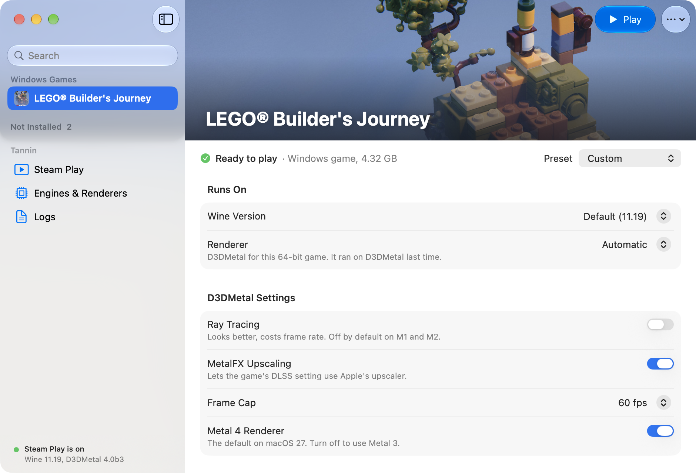

Steam Play, on your Mac.
On Linux and the Steam Deck, Steam can install and run Windows games. Tannin brings that to Steam for Mac. Free and open source.
Download Tannin 0.2.0For Macs with Apple silicon, on macOS 26 or later.
This is an early test build: so far, one game on one Mac.

Install
- Open the download and drag Tannin into your Applications folder.
- Open Tannin. macOS will say it could not verify it, so open System Settings › Privacy & Security and click Open Anyway. You only do this once.
- Follow Set Up Tannin. It downloads the Wine engine, asks for Apple’s Game Porting Toolkit (free with an Apple account), and asks before it changes Steam.
Then install a Windows game from your Steam library and press Play, in Steam or in Tannin.
What it changes in Steam
Valve does not support this. Here is everything Tannin does to Steam.
| Adds | One file inside Steam.app. |
|---|---|
| Changes | Two lines of Steam’s settings. |
| Signs | Steam again, on your Mac, so that it will load the added file. |
| Stops | Steam updating itself, because a Steam update turns Steam Play off. |
| To undo | Engine › Remove Steam Play puts back a copy of Steam signed by Valve. Your games, saves and account are not touched. |
Known limits
- 32-bit games start, but without the Steam overlay, achievements or cloud saves.
- When Steam moves to a build Tannin does not know yet, Steam Play stays off until Tannin catches up. Mac games are not affected.
- Games whose anti-cheat needs Windows kernel drivers do not run.